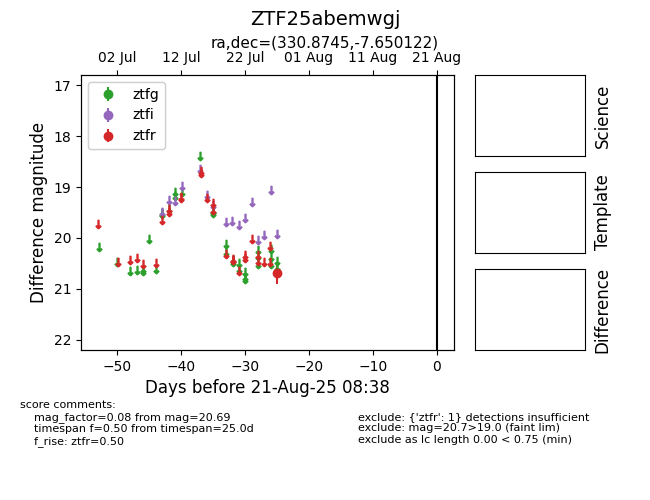

Target ZTF25abemwgj at 2025-08-21 08:38, see:
FINK: fink-portal.org/ZTF25abemwgj
Lasair: lasair-ztf.lsst.ac.uk/objects/ZTF25abemwgj
ALeRCE: alerce.online/object/ZTF25abemwgj
alt names
ZTF25abemwgj (ztf,alerce)
coordinates:
equatorial (ra, dec) = (330.8745,-7.65012)
galactic (l, b) = (51.0906,-45.75480)
photometry
last ztfr=20.69
1 ztfr detections
